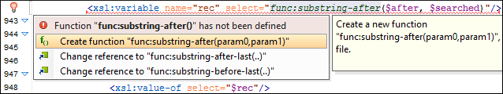

XSLT Quick Fix Support
The Oxygen XML Editor Quick Fix support helps you resolve various errors that appear in a stylesheet by proposing Quick Fixes to problems such as missing templates, misspelled template names, missing functions, or references to an undeclared variable or parameter.
To activate this feature, hover over or place the cursor in the highlighted area of text
where a validation error or warning occurs. If a Quick Fix is available for that
particular error or warning, you can access the Quick Fix proposals with any of
the following methods:
- When hovering over the error or warning, the proposals are presented in a tooltip pop-up window.
- If you place the cursor in the highlighted area where a validation error or warning
occurs, a Quick Fix icon (
 )
is displayed in the stripe on the left side of the editor. If you click this icon, Oxygen XML Editor displays the list of available fixes.
)
is displayed in the stripe on the left side of the editor. If you click this icon, Oxygen XML Editor displays the list of available fixes. - With the cursor placed in the highlighted area of the error or warning, you can also invoke the Quick Fix menu by pressing Alt + 1 (Command + Alt + 1 on OS X) on your keyboard.
Note: The Quick Fixes are available only when validating an XSLT file with Saxon
HE/PE/EE.

Oxygen XML Editor provides XSLT Quick Fixes for the following types of
instances:
- Template does not exist, when the template name referenced in a
<call-template>element does not exist. The following fixes are available:- Create template "templateName" - creates a template and
generates its corresponding parameters. The template name and parameter names and
types are collected from the
<call-template>element. - Change reference to "newTemplateName" - changes the name of
the missing template referenced in the
<call-template>element. The proposed new names are the existing templates with names similar with the missing one.
- Create template "templateName" - creates a template and
generates its corresponding parameters. The template name and parameter names and
types are collected from the
- Variable/Parameter not declared, when a parameter or variable
reference cannot be found. The following fixes are available:
- Create global variable "varName" - creates a global variable with the specified name in the current stylesheet. The new variable is added at the beginning of the stylesheet after the last global variable or parameter declaration.
- Create global parameter "paramName" - creates a global parameter with the specified name in the current stylesheet. The new parameter is added at the beginning of the stylesheet after the last global parameter or variable declaration.
- Create local variable "varName" - creates a local variable with the specified name before the current element.
- Create template parameter "paramName" - creates a new parameter with the specified name in the current template. This fix is available if the error is located inside a template.
- Create function parameter "paramName" - creates a new parameter with the specified name in the current function. This fix is available if the error is located inside a function.
- Change reference to "varName" - changes the name of the referenced variable/parameter to an existing local or global variable/parameter, that has a similar name with the current one.
- Parameter from a called template is not declared, when a
parameter referenced from a
<call-template>element is not declared. The following fixes are available:- Create parameter "paramName" in the template "templateName" - creates a new parameter with the specified name in the referenced template.
- Change "paramName" parameter reference to "newParamName" -
changes the parameter reference from the
<call-template>element to a parameter that is declared in the called template. - Remove parameter "paramName" from call-template - removes the
parameter with the specified name from the
<call-template>element.
- No value supplied for required parameter, when a required
parameter from a template is not referenced in a
<call-template>element. The Add parameter "paramName" in call-template quick-fix is available. It creates a new parameter with the specified name in call-template element. - Function "prefix:functionName()" has not been defined, when a
function declaration is not found. The following Quick Fixes are
available:
- Create function "prefix:functionName(param1, param2)" - creates a new function with the specified signature, after the current top-level element from stylesheet.
- Change function to "newFunctionName(..)" - changes the referenced function name to an already defined function. The proposed names are collected from functions with similar names and the same number of parameters.
- Attribute-set "attrSetName" does not exist, when the referenced
attribute set does not exist. The following Quick Fixes are available:
- Create attribute-set "attrSetName" - creates a new attribute set with the specified name, after the current top-level element from stylesheet.
- Change reference to "attrSetName" - changes the referenced attribute set to an already defined one.
- Character-map "chacterMap" has not been defined, when the
referenced character map declaration is not found. The following Quick Fixes
are available:
- Create character-map "characterMapName" - creates a new character map with the specified name, after the current top-level element from stylesheet.
- Change reference to "characterMapName" - changes the referenced character map to an already defined one.